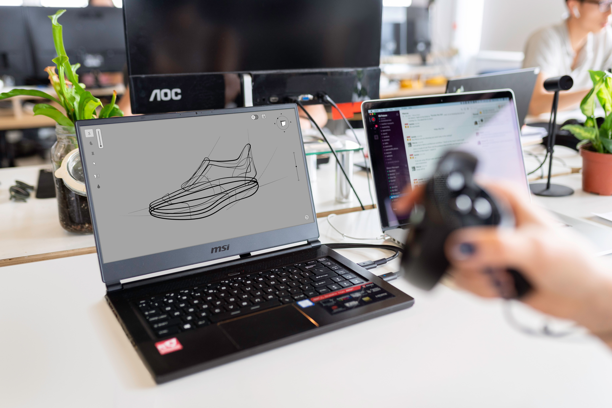
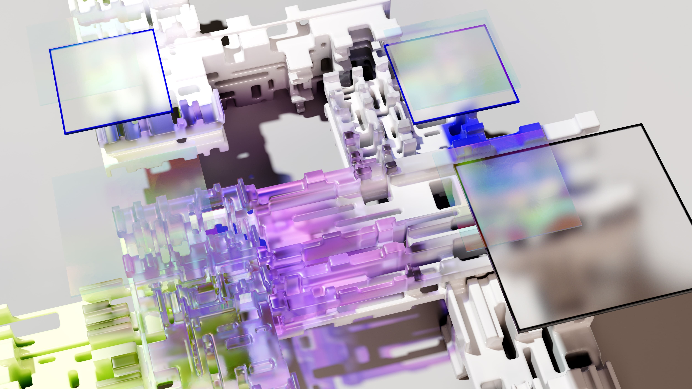
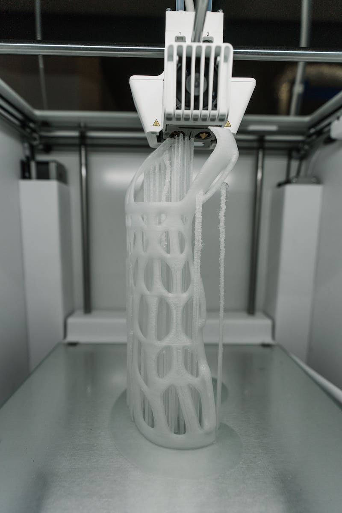

¿Cómo funciona la impresión 3D?
La impresión 3D consiste en materializar un diseño realizado por un software o programa a un objeto tangible y tridimensional. Si bien el proceso de impresión resulta bastante sencillo, por lo general suele demorar varias horas, según la calidad de impresión y el tamaño de la pieza.
En Laboratorio3D, realizamos dos tipos de impresiones en plástico: las impresiones de filamentos y las impresiones en resina. Para ello, tenemos a disposición una impresora 3D Creality Ender-3 V2 y una impresora 3D Creality LD-002H, respectivamente.
Proceso de impresión

También pueden utilizarse diseños prefabricados o plantillas diseñadas por otros usuarios.
Una vez que está listo el diseño, debemos abrir el archivo con un programa laminador y realizar los cambios correspondientes, para finalmente exportar el archivo con la extensión Gcode.
1. Diseño y laminación
El primer paso es partir de un diseño o boceto de alguna idea que tengamos en mente y luego utilizar un programa de diseño profesional para realizar el modelado digital. Una vez que esté listo, guardamos el archivo con extensión .stl (formato estándar para tecnologías de fabricación aditiva).También pueden utilizarse diseños prefabricados o plantillas diseñadas por otros usuarios.
Una vez que está listo el diseño, debemos abrir el archivo con un programa laminador y realizar los cambios correspondientes, para finalmente exportar el archivo con la extensión Gcode.

Asimismo, es necesario comprobar que los componentes de la impresora estén bien colocados y que todo esté calibrado correctamente para evitar una mala impresión.
Una vez que está todo listo, ya podremos cargar el archivo en la impresora 3D.
2. Configuración y calibración
A continuación se deben generar todos los parámetros necesarios de impresión, en los que se debe especificar la calidad, el uso, la resistencia, la posición de impresión y el material a utilizar.Asimismo, es necesario comprobar que los componentes de la impresora estén bien colocados y que todo esté calibrado correctamente para evitar una mala impresión.
Una vez que está todo listo, ya podremos cargar el archivo en la impresora 3D.

Dejamos que el aparato trabaje el tiempo que sea necesario, y una vez terminado despegamos el producto del área de impresión.
3. Impresión
Habiendo cargado el archivo, configuramos el modo de impresión e insertamos el material de impresión según corresponda (filamentos o resina). De este modo, preparamos la máquina con el material y el color necesario y ejecutamos el programa, dando inicio así a la impresión.Dejamos que el aparato trabaje el tiempo que sea necesario, y una vez terminado despegamos el producto del área de impresión.